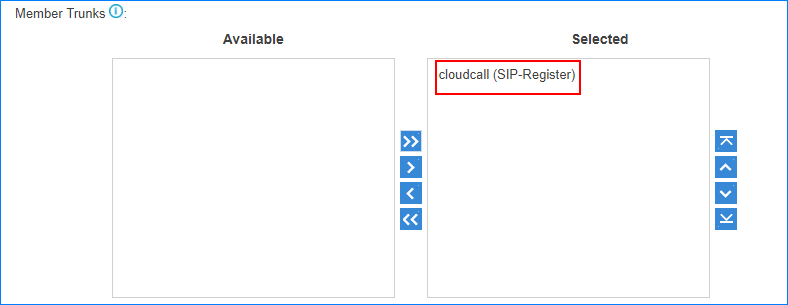
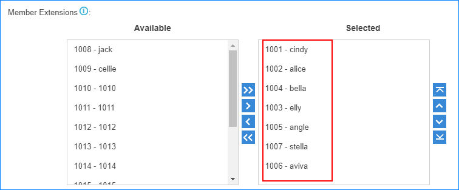

To allow users make outbound calls through trunks, you need to set up at least an
outbound route on the PBX.
The PBX has a default outbound route with dial pattern
X. that allows you to dial any outgoing numbers. You can delete the
default outbound route, then add a new one to configure settings according to your
needs.
-
Go to , click Add.
-
Set the Name to specify the route name. The name is
usually descriptive, i.e. "local" for local calls, "international" for
international calls.
-
Set a dial
pattern of the outbound route.
- Optional:
Click to add a dial pattern for the outbound route.
-
In the Member Trunks field, select the desired trunk
from Available box to the Selected
box.
The users can only use the selected trunk to make outbound calls through this
route.

-
In the Member Extensions field, select the desired
extensions from Available box to the
Selected box.
Only the selected extension users can make outbound calls through this
route.

- Optional:
Set the other settings.
- Password: If password is set, when users try to
make outbound calls through this route, they will be asked to enter a
password.
- Rrmemory Hunt: If this function is enabled, the
PBX will remember which trunk was used last time, and then use the next
available trunk to call out.
- Time Condition: By default, users can call out
through the outbound route at any time. You can define when the outbound
route is available for users.
-
Click Save and Apply.
Note: After you finish the outbound route configurations, you need to check the priority
of your outbound routes and adjust the priority if needed.